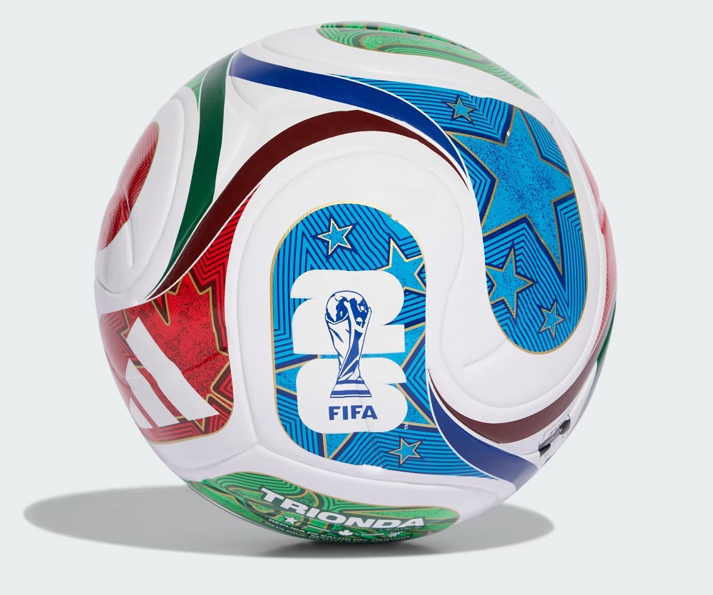

O que é uma imagem?
É a representação visual de um objeto produzida pela luz ao ser refletida, refratada ou captada por dispositivos ópticos.
Como as imagens são formadas?
A luz emitida ou refletida pelos objetos chega aos nossos olhos ou a instrumentos ópticos, permitindo a visualização da imagem.
Imagens reais e virtuais
Reais: podem ser projetadas em uma tela.
Virtuais: não podem ser projetadas e são vistas apenas ao olhar para o sistema óptico.
Aplicações no cotidiano
Câmeras fotográficas, telescópios, microscópios, espelhos, celulares e óculos utilizam princípios de formação de imagens.

O que são as cores?
As cores são percepções visuais causadas por diferentes comprimentos de onda da luz visível.
Luz branca
A luz branca é formada pela combinação de todas as cores do espectro visível.
Como enxergamos as cores?
Os objetos absorvem algumas cores e refletem outras. A cor percebida é a que chega aos nossos olhos.
Cores primárias da luz
A combinação delas gera outras cores.

O que é reflexão?
É o fenômeno em que a luz retorna ao meio de origem ao atingir uma superfície.
Lei da reflexão
O ângulo de incidência é igual ao ângulo de reflexão.
Tipos de espelhos
Plano
Côncavo
Convexo
Cada um produz imagens diferentes.
Aplicações
Espelhos são utilizados em veículos, telescópios, equipamentos médicos, decoração e sistemas de segurança.
.jpeg)
Como funciona?
O olho capta a luz e transforma as informações visuais em sinais enviados ao cérebro.
Principais estruturas
Córnea
Íris
Pupila
Cristalino
Retina
Formação da imagem
O cristalino focaliza a luz na retina, formando uma imagem real e invertida.
Problemas de visão
Miopia
Hipermetropia
Astigmatismo
Presbiopia
Podem ser corrigidos com óculos, lentes ou cirurgia.
.jpeg)
A bola da Copa do Mundo é desenvolvida com tecnologia avançada para garantir melhor desempenho em campo. Sua física envolve fatores como peso, formato, pressão interna e material de fabricação. Essas características influenciam a velocidade, a trajetória e o efeito da bola durante chutes e passes. O formato perfeitamente esférico reduz a resistência do ar, enquanto a superfície ajuda a controlar o movimento. Além disso, a pressão correta permite que a bola tenha um bom equilíbrio entre precisão, controle e velocidade, proporcionando um jogo mais justo e emocionante.
